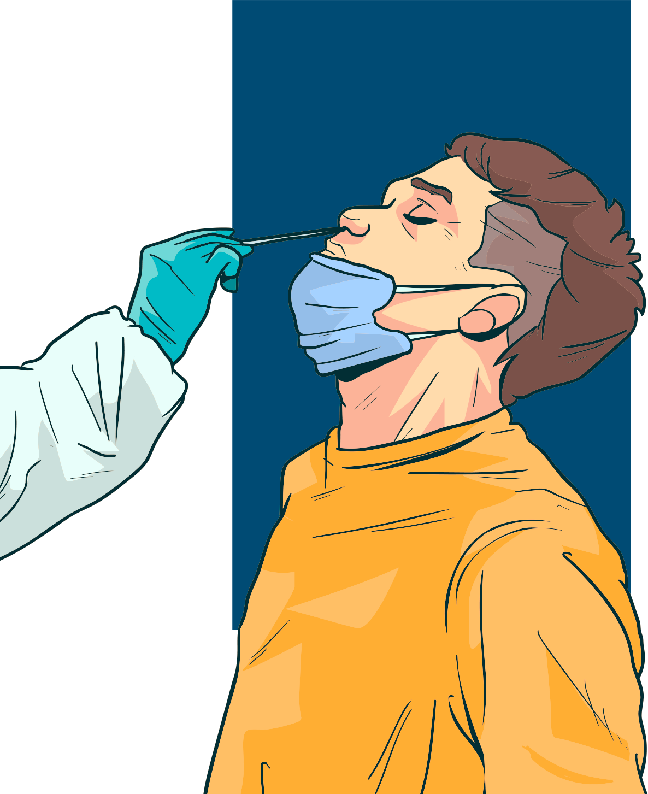

O SARS-Cov-2 faz parte de uma grande família de vírus bastante conhecida: os denominados coronavírus. Eles causam doenças que variam de um resfriado comum a doenças mais graves, como é o caso da Síndrome Respiratória do Oriente Médio (MERS-Cov) e da Síndrome Respiratória Aguda Grave (SARS-Cov).
São vírus altamente patogênicos, com comportamento bastante peculiar. Algumas pessoas são infectadas, mas não apresentam sintomas nem sequer percebem que estão adoentadas. Cerca de 80% se recuperam sem precisar de tratamento especial.